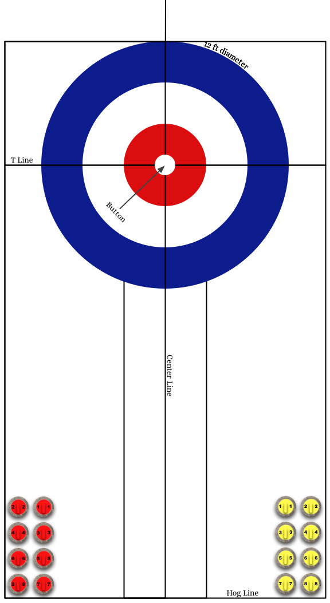

Congrats! You've solved this puzzle. The answer is A HARD DAYS NIGHT. However, you don't know its title. When you think you've gotten the title, call HQ.
Sometimes the pawns get bored with regular chess and decide to play chess on ice.
The sweep calls given for each throw in order...
- The game was tied going down to the final end. All descriptions of stones thrown refer to stones in this final end. Curling stones in Wonderland are exactly 1 foot in diameter and teams play on a regulation curling sheet. Stones are thrown in standard numerical order and the teams threw in the standard order of Lead, Second, Vice, Skip -- meaning the leads threw stones 1 and 2, the seconds threw stones 3 and 4, etc. All curlers are right handed (i.e. in-turns curl to the right) and gender can't be inferred by voice or by name. Sweepers listened to the skips and only swept stones when the person in the house called them on by yelling "HARD!"
- The red team played in alphabetical order. The final end was not stolen.
- Fawn played on the same team as a lead whose stone always landed exactly on the T line. Fawn's first shot ended up as the mirror reflection across the center line of the stone furthest in the front inside the house. Fawn's second shot curled in the opposite direction and froze onto that same stone.
- Frog aimed the stone exactly at the skip's broom as she released it on her first shot, which was sitting on the button, with an out-turn handle and hit perfect T line weight. This shot wound up counting, resulting in Frog's team winning the end. Frog's second shot was heavy and went through the house.
- The sum of the numbers on the stones Haigha threw was one less than a perfect square. Haigha aimed at the broom on the button two times in a row. The first was an in-turn handle and the second was an out-turn handle. Haigha hit both shots at the called weight. All in a day's work.
- Hatta attempted two take outs. The stone that wasn't swept at all successfully took out an even opponent's stone and replaced it. The other stone was off line and sailed through the back of the house, without affecting any of the stones in play.
- Lily, who was on the winning team, threw the first two guards of the game. Both were perfect centerline guards, the second stopping exactly two feet in front of where the first was thrown.
- Oyster, who was on the losing team and would only agree to skip if playing on Hatta's team, froze the first stone to the inside of the stone furthest back in the house, in a direct line with the center of the stones and the button. Oyster's second shot froze to the front of the stone closest to the hogline.
- Rose had a late night and can't yell, and thus won't play vice or skip. The first shot Rose threw was a come-around that curled behind an opponent's stone. It was 3.5 feet from the button at its closest point. It was 1.828 feet directly behind the opponent's stone but was not shot rock. The second shot Rose threw was exactly 180 degrees opposite the button of the first shot.
- One of Tiger-Lily's shots was heavy, but hung on to bite and hug the back line to stay in play. Tiger-Lily's other shot hogged (i.e. did not travel far enough to be in play), and yet, the sweepers were never called on.
